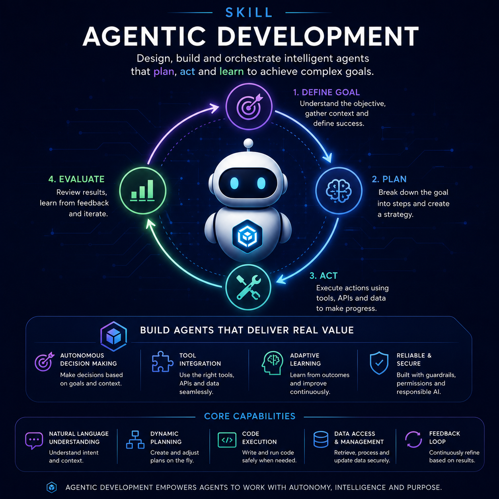
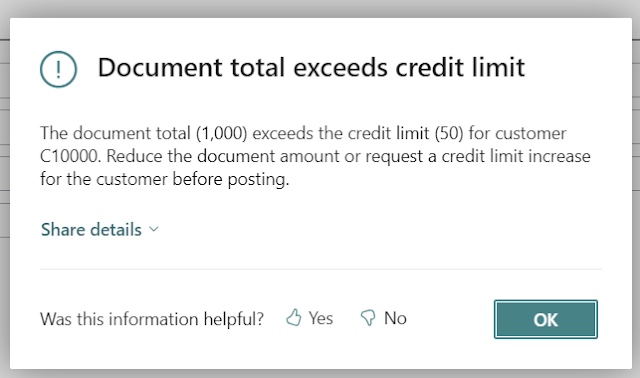
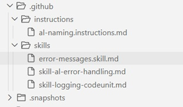

Agentic Development in Business Central: Using Skills to Teach Your Coding Agent
Anyone who has built AL extensions has run into this before: an error message that simply says "Error in the document" and tells you nothing. Not the message, not the technical detail behind it, nothing that helps you understand what happened, why it happened, or what to do about it. It's a common enough problem to make a perfect case study for one of the most useful building blocks in agentic development with GitHub Copilot: skills.
This is the second entry in the series on agentic development in Business Central. The first article covered instructions; this one moves on to skills, and to the difference between something the agent must always follow and something it only applies when asked.

Instructions vs. skills
Instructions, as covered in the previous article, are mandatory: an applyTo header ties them to a file type — .al files, for example, and from then on every piece of code the agent generates in that scope has to respect them.
Skills work differently. They live inside a skills folder, nested under .github, and each one is made up of three parts: a name, a description, and a detailed explanation of how to do something. The key difference is that a skill is never triggered automatically. There's no applyTo attaching it to a file type. The agent only uses it when it's explicitly told to — or when it's invoked from another part of the workflow, something we'll get into in a future entry.
That makes skills the right tool for capturing a specific practice — like "this is what a good error message looks like in this extension" — without forcing it into every single line of code the agent writes.
A practical case: informative error messages
To illustrate how a skill works, we define one focused on improving error messages. The rule is simple: every error message must answer three questions, in this order:
- What happened?
- Why did it happen?
- What should be done about it?
In AL, the skill points the agent to ErrorInfo, the data type that lets an error carry a title, a detailed message, and even an action, for instance, a codeunit that can be run to fix the problem directly from the error message itself. When ErrorInfo isn't an option because not all the parameters are available, the skill still requires the plain error text to cover the same three answers, with a concrete example: "The ending date [X] is earlier than the starting date [Y]. Correct the ending date before continuing."
The skill is equally explicit about what to avoid: generic messages ("Error in the document", "Could not be processed", "Invalid value"), references to a technical field name, or bare error codes ("Error 17"). None of these give the person hitting the error anything useful to act on.
Finally, it sets a couple of codingstyle rules: every error text must live in a Label variable — never hardcoded — and those labels must end with the Err suffix, so they're easy to spot and maintain.

Why skills need to be called explicitly
The first test makes the behavior of skills obvious. Starting from a codeunit full of the usual unhelpful errors ("Error", "Error in the document", "Line cannot be processed", "Invalid value"), the agent is simply asked to improve the errors in that codeunit — nothing more.
The result is a slightly nicer wording, but it completely ignores the rules that were defined: no ErrorInfo, no Label variables, no Err suffix. The reason is straightforward — the skill was never invoked. Unlike an instruction, which applies automatically to any AL file, a skill only comes into play when the agent is told to go and read it.
The fix is to name it explicitly in the prompt: "Improve the errors in this codeunit using the ErrorMessages skill." At that point the behavior changes completely. The agent locates the skill file, reads its content, and only then applies the rules: it generates the Label variables with the Err suffix, builds the corresponding ErrorInfo wherever possible, and produces messages that answer the three questions — what happened, why it happened, and what to do about it.

Seeing it at runtime
Testing it live makes the difference obvious. An inconsistent date range that used to produce a blank "Error in the document" now returns something like: "The ending date is earlier than the starting date of the rental period. Correct the ending date before continuing." The same happens when simulating a credit limit being exceeded: the message explains the problem and points straight at the fix.
The takeaway
The lesson goes beyond error messages. Whenever the agent solves a task in a way that doesn't match how you want things built, the answer isn't to keep fixing it by hand every time — it's to turn that practice into a skill. The time spent documenting a good practice once pays for itself many times over, because the agent stops repeating the same approach mistake in every future iteration.
Instructions guarantee a baseline that every piece of code has to meet. Skills let you teach the agent specific procedures, on demand, without loading every single generation with rules that don't always apply. Knowing when to use each one is one of the keys to making agentic development genuinely productive in Business Central.
The next entry in this series will keep building on this: more pieces of the workflow, and how instructions and skills combine with the rest of what GitHub Copilot's agent mode can do.